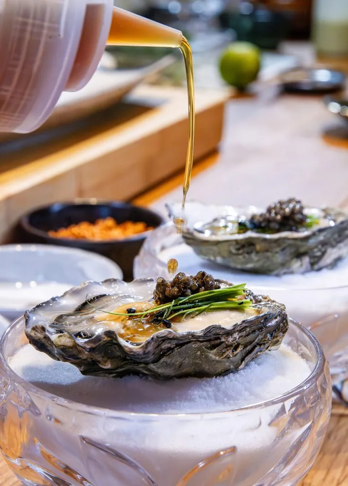
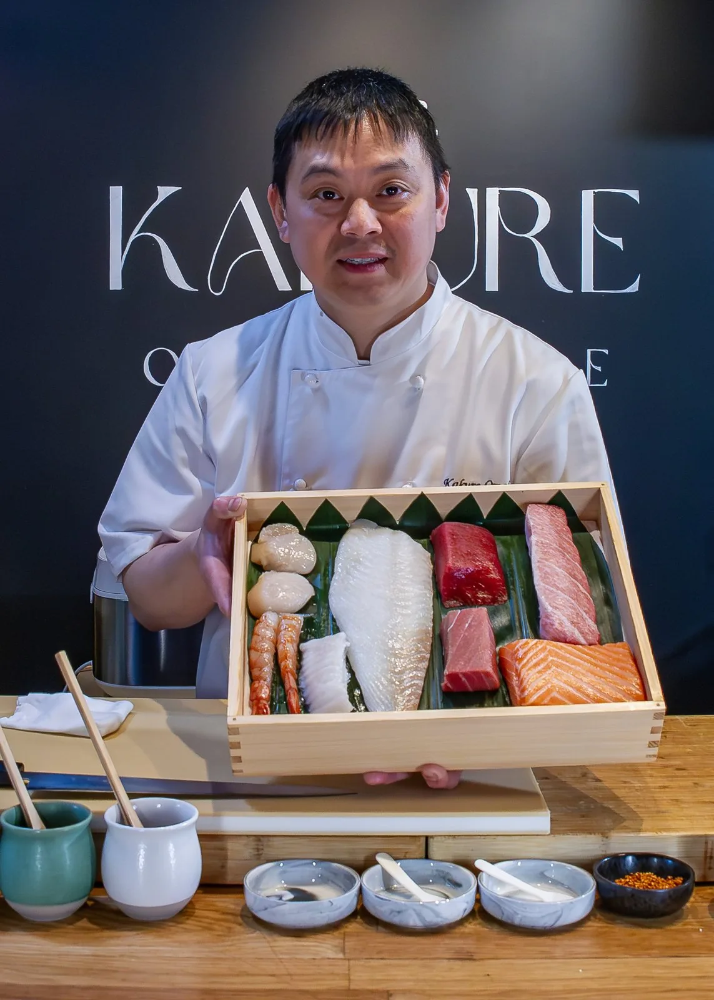
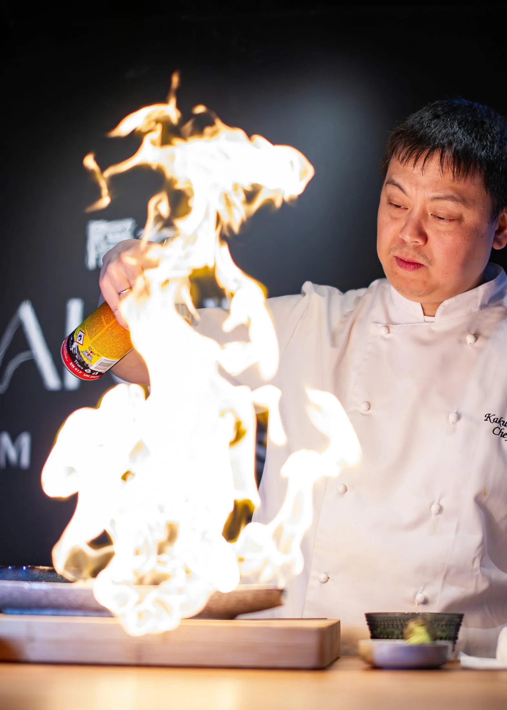
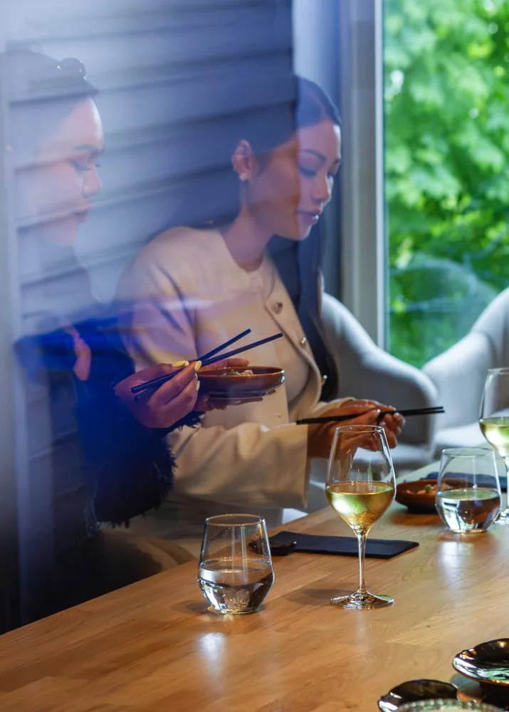
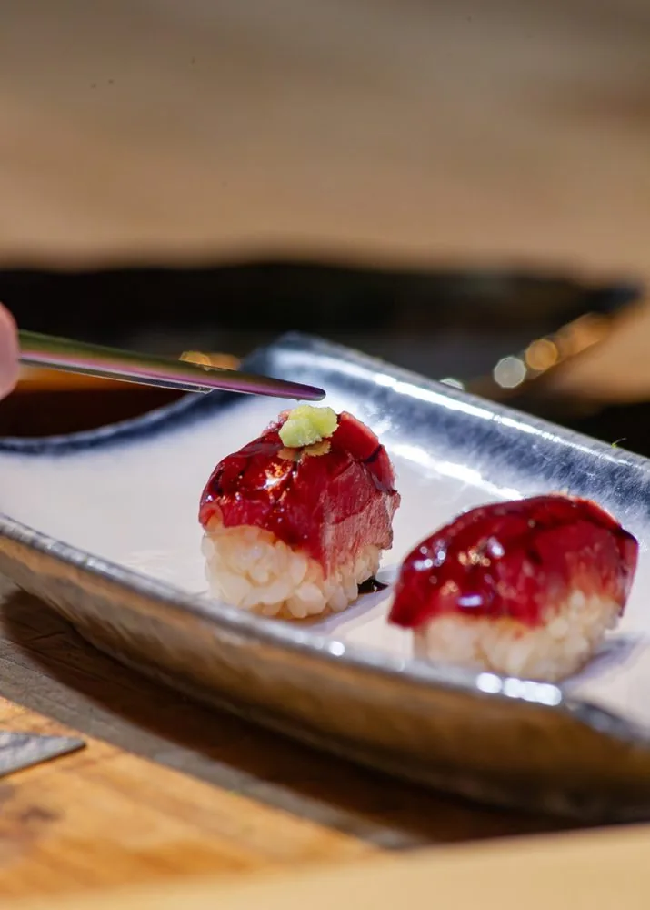
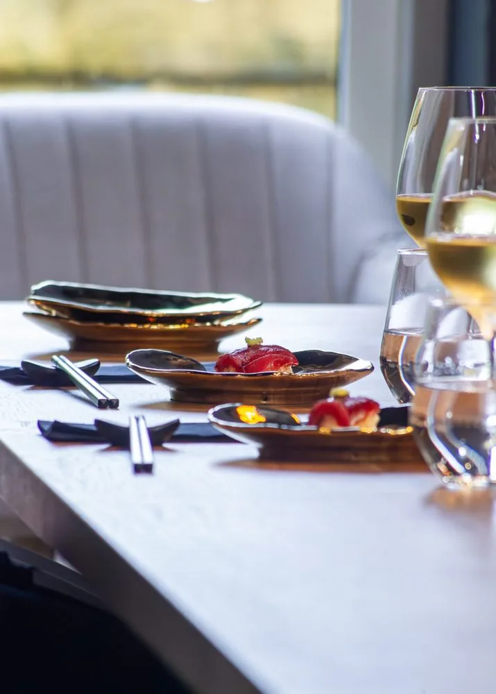

隠れ Omakase in Bergen
A hidden world-class
omakase experience
An intimate 15-course journey of classic Edomae sushi and bold Nikkei flavours, served in a hidden, private room with only six seats.
お任せ — Trust the chef
Bergen's most exclusive
omakase experience
Welcome to Kakure Omakase, an intimate 15-course journey that combines classic Edomae sushi with bold Nikkei flavours. Everything is served in a hidden, private room with only six seats, right in the heart of Bergen. Created by a master chef with nearly 20 years of international experience: a culinary journey through Japan, delivered with precision, passion and personality.
Expect a carefully curated tasting experience where every course is balanced for flavour, texture and presentation. Inspired by the styles of Nobu and Chotto Matte, we offer a menu that surprises and delights.

The concept
Japanese roots
Kappo-style omakase combines the artistry of traditional Japanese cooking with the intimacy of a chef's table experience. Guests enjoy a progression of seasonal dishes prepared with different techniques: Robatayaki (grilling), Nimono (simmering), Agemono (deep-frying), Sashimimono (sashimi) and other carefully crafted preparations.
The experience concludes with Chef Akira's modern Edomae-style nigiri sushi, showcasing the finest seafood and perfectly balanced sushi rice at its peak of flavour.
A journey through the seasons, one course at a time.

The chef
Meet the chef behind the counter
The chef behind Kakure Omakase has followed an uncompromising passion for sushi for more than 15 years, across major cities, cultures and prestigious restaurants. The adventure began in Hong Kong at the renowned sushi restaurant Sen-Ryo, before the journey continued to London, where he worked at six different Japanese restaurants, including well-known names such as Nobu Mayfair, Zuma, Roka, Sticks'n'Sushi and Chotto Matte.
In 2011, Chef Akira was part of the opening team for the first Sabi Sushi in Stavanger and Sushi Bar in Trondheim. Since then he has contributed to world-class sushi kitchens: from Bushido in Bahrain to Sabi Omakase Enso in Stavanger, Nama Sushi in Bergen, Nodee Sky in Oslo and Omakase Hamar by Chef Akira in Hamar.
With experience from more than 25 restaurants and an unwavering dedication to the craft, Chef Akira opened his 26th venue on 1 May 2025: Kakure Omakase, an intimate sushi journey centred on craftsmanship, first-class ingredients and calm.
出張 — The chef comes to you
Hire a private chef
Want the omakase experience at your own venue? Chef Akira travels out and cooks wherever you are: at home, at your cabin or at the venue you have booked. The same craft and the same quality ingredients as at the counter on Stølegaten, tailored to your party.
The service requires a minimum of 10 people. Get in touch for prices and availability.
The experience
Moments from the counter




隠れ
Book your seat
Only six seats, one seating at a time. Book well in advance to secure your evening.